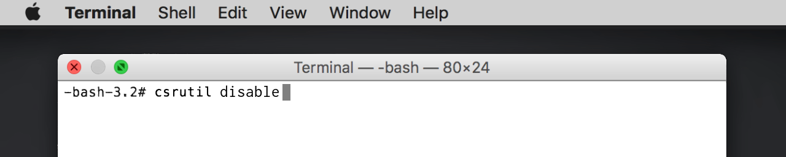

The System Integrity Protection feature of macOS improves security, but also prevents users from customizing many system icons. Here's how to replace system icons in macOS.
- Hold
⌘ + Rwhile restarting your Mac to enter Recovery Mode. - Open
Menubar>Utilities>Terminaland type the commandcsrutil disableto turn System Integrity Protection off, then restart.
 - Use the Get Info panel or LiteIcon to replace the icons for App Store, FinderTo change Finder's icon in the Dock, you must also replace
finder.pngandfinder@2x.pngin/System/Library/CoreServices/Dock.app/Contents/Resources/, Mail, Safari, and any other system apps you want to customize.
- Hold
⌘ + Rwhile restarting your Mac to enter Recovery Mode again. - Open
Menubar>Utilities>Terminaland run the commandcsrutil enableto turn System Integrity Protection back on, then restart normally. Your system is now protected, and your icons are customized! If some replacements haven't appeared yet, try clearing the icon cache (either manually or with LiteIcon).
Your system is now protected, and your icons are customized! If some replacements haven't appeared yet, try clearing the icon cache (either manually or with LiteIcon).